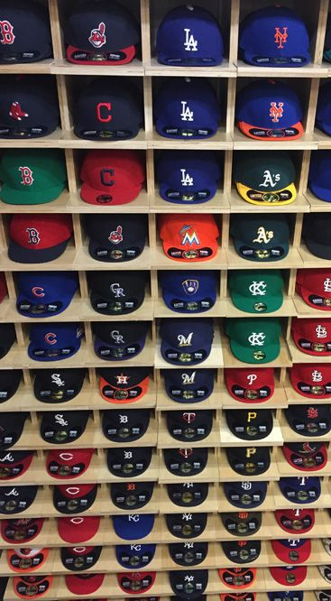

Fitted Cap Culture
Fitted hats, also known as "sized hats," are a popular style of headwear that have a snug, comfortable fit. Unlike adjustable hats, which have a strap or buckle to adjust the size, fitted hats are made to fit specific head sizes. This results in a more streamlined and polished look, as the hat sits neatly on the head without any excess material or sagging. Fitted hats come in a variety of materials, including wool, cotton, and synthetic blends, and can feature a wide range of logos and designs. They are popular among sports fans, particularly for baseball teams, and are often worn as part of a casual or athletic outfit. While some people find the lack of adjustability limiting, others appreciate the clean look and precise fit of a fitted hat.
Fitted hats have become a part of fashion, as they are not only functional but also stylish. They are available in various designs, colors, and materials that can be paired with different outfits to create a fashionable look. Fitted hats are popular in streetwear fashion, as they provide a way to showcase a particular team, brand, or logo. They can be worn in various ways, such as with a casual outfit or as an accessory to a more formal look. Fitted hats have become an essential part of fashion for many people, providing a way to express their individuality and add a touch of personality to their outfits.